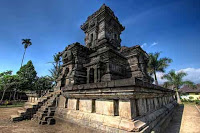
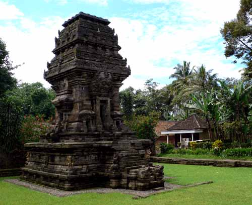
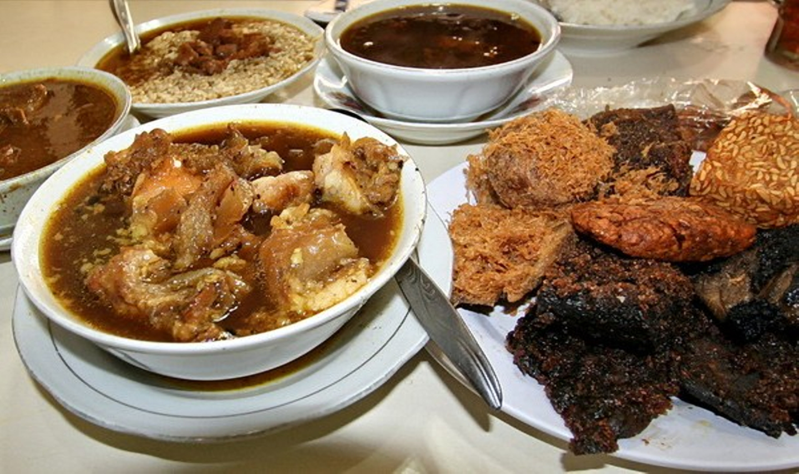

Budaya

Salah satu peninggalan bersejarah di Malang
adalah candi Singosari. Dikenal juga dengan
candi Kendedes, dibangun untuk menghormati
Raja Kertanegara, raja terakhir kerajaan
Singasari yang meninggal tahun 1292.
Didirikan tahun 1300 bersamaan dengan
diselenggarakannya upacara shrada ditempat
ini. Ciri khas candi singasari adalah dua
arca raksasa Dwarapala, yang diyakini sebagai
penjaga istana.
Candi jago atau jajaghu didirikan antara
tahu 1275 - 1300 M. dipercaya sebagai
tempat penguburan abu raja Wisnuwardhana,
raja ke 4 Singhasara. Memiliki hiasan ornamen
yang indah, identik dengan candi penataran di
Blitar. Terletak di desa Jago kec Tumpang
sekitar 22 km arah timur kota Malang.

Candi Kidal memiliki tinggi 17 meter,
namun sekarang tinggal sekitar 12,5
meter. Memiliki pondasi persegi empat,
dengan pintu candi menghadap ke timur.
Diatas pintu candi terdapat kepala raksasa
dan singa dan memiliki ornamen cuplikan
kisah mahabharata. Candi ini terletak di
desa Rejo Kidal kec Tumpang, sekitar 24
km arah timur Malang.
Budaya
Phutu Lanang Celaket
Warung putu legendaris in didirikan sejak lama oleh Bu Soepijah. Meski hanya menjual aneka jajanan dan kudapan ringan yang lezat seperti Kue Putu, Cenil, Lupis dan Klepon, namun peminatnya tetap membludak hingga saat ini.
Mulai Rp10.000
Alamat: Jl. Jaksa Agung Suprapto, Gang Buntu RT 03, Samaan, Klojen, Malang
Telepon: 0817 530 365
Jam Operasional: Selasa-Minggu, 17.30 – 21.30
Cwie Mie Malang
Saat berkeliling di daerah pusat jantung kota Malang, sempatkan waktu mencicipi lunpia khas Hok Lay. Selain itu, jangan lewatkan sajian Pangsit Cwimie yang disajikan dengan 2 buah pangsit renyah, daging ayam, bawang goreng dan daun bawang. Sebagai penutup, pesanlah minuman Fosco, resep lama dari zaman Belanda yang disajikan dalam botol Coca Cola, berupa campuran cokelat dan susu yang creamy dan unik abis.
Harga:Cwimie, Rp15.000 | Es Fosco, Rp6.000
Alamat:Jl. KH. Ahmad Dahlan No. 10, Klojen, Kota Malang
Telepon:(0341) 364 513
Jam Operasional:09.00 – 13.30 dan 17.00 – 20.30

Rawon Nguling
Ramuan bumbu kuah rempah khas dari Rawon Nguling tentu tidak akan membuat Anda kecewa sepulang dari Malang. Hampir setiap hari warung yang masih berada dekat jantung kota ini selalu ramai pengunjung demi semangkuk rawon. Oh iya, ada dua varian rawon yang bisa Anda pesan, yaitu Rawon Dhengkul dan Rawon Biasa
Harga:Mulai Rp27.000
Alamat:Jl. Zainul Arifin No. 62, Klojen, Kota Malang
Telepon:(0341) 324 684
Jam Operasional:07.00 – 16.30
Bakso President
Bagi pelancong yang kerap mengunjungi Malang, Bakso President adalah tempat kuliner Malang yang paling legendaris dan wajib untuk dikunjungi. Di tempat kuliner Malang ini, Anda bisa menikmati aneka olahan bakso khas Malang yang rasanya sudah pasti autentik dan juara. Ada bakso bakar yang diolah dengan bumbu khas, bakso dengan jeroan, dan bakso orisinal yang rasanya akan membuat Anda ketagihan.
Harga:Rp10.000-25.000
Alamat:Jalan Batanghari No. 5 Malang.
Telepon:(0341) 496746
Jam Operasional:08.00-21.30
Wisata
Malang Night Paraidse
Malang Night Paradise menjadi
destinasi pilihan warga lokal
maupun wisatawan sejak pertengahan
tahun 2017. Taman wisata ini merupakan
pengembangan dari taman air Hawai
Waterpark. Sehingga keduanya masih
berada dalam satu lokasi. Tepatnya
di Jalan Graha Kencana Raya No. 66
Karanglo, Balearjosari, Blimbing,
Kota Malang, Jawa Timur.Taman ini
memiliki konsep serupa dengan Taman
Pelangi di Monumen Jogja Kembali,
Yogyakarta. Pada siang hari, tempat
wisata ini adalah Hawai Waterpark.
Kemudian di malam hari, menjadi Malang
Night Paradise. Hawai Waterpark dan
Malang Night Paradise dikelola oleh
PT. Adikarya Citra Abadi.Malang Night
Paradise memadukan aspek edukasi, seni
dan teknologi dalam menjadikannya obyek
wisata. Banyaknya sarana edukasi menjadi
satu keunggulan tersendiri bagi taman ini.
Konsep yang diusung taman ini adalah Lantern
and Dinosaur. Dipadukan dengan teknologi,
tempat ini menjadi sangat interaktif.
Hawai Waterpark
Untuk Anda yang menginginkan wahana permainan
air, kunjungilah Hawai Waterpark. Sesuai namanya,
tempat wisata permainan air memiliki tema Kepulauan
Hawai. Dengan konsep yang matang, membuat siapapun
yang mengunjungi tempat wisata ini menjadi seperti
benar-benar berada di Hawai. Ya, berbagai wahana wisata
yang seru bisa didapatkan di tempat yang dibuat mirip
seperti suasana Hawai ini. Mulai dari wahana Mavi Island,
Hawai Water House, Rainbow Fall, Ekolu Slide, dan lain
sebagainya.Hawai Waterpark merupakan tempat yang tepat
untuk melengkapi wisata Anda di Malang dan Batu. Letaknya
ada Kecamatan Singosari, Kabupaten Malang, Jawa Timur.
Tidak hanya bisa bermain dan berwisata di tempat wisata
bertemakan alam, taman bermain, namun juga bisa bermain
air sepuasnya di waterpark canggih dan luas ini. Menu utama
yang disajikan dari taman wisata air ini adalah wahana ombak
Tsunami. Memang benar, tidak ada satupun yang ingin merasakan
tergulung Tsunami sungguhan. Namun, Tsunami Hawai di Hawai
Waterpark ini menyuguhkan sensasi luar biasa seru. Anda akan
merasakan terhempas ombak disebuah kolam yang cukup kencang
namun sudah terukur keamanannya.
Alun-Alun Malang
Nah, jika Anda ingin Wisata Malang yang murah
meriah, dan paling mudah dikunjungi, maka
alun-alun Kota Malang jawabannya. Alun-alun
ini sekarang sudah dibenahi sehingga Anda bisa
dengan nyaman menikmati kesibukan kota Malang,
sambil ditemani ratusan burung merpati serta
taman cantik yang tertata rapi. Ada banyak
tempat duduk di sekitar alun-alun ini sehingga
Anda tidak perlu khawatir akan merasa lelah. Di
bagian tengahnya terdapat air mancur, bisa membuat
segar mata.
Museum Brawijaya
Nah, kalau Anda suka dengan wisata sejarah,
maka Museum Brawijaya bisa menjadi pilihannya.
Di museum ini Anda akan menemukan banyak sekali
benda kuno yang jelas bersejarah, seperti gerbong
maut, senapan, meriam, tank dan lain-lain. Tentunya
ini juga menjadi tempat yang tepat untuk mengenalkan
sedikit sejarah pada anak.

.jpg)